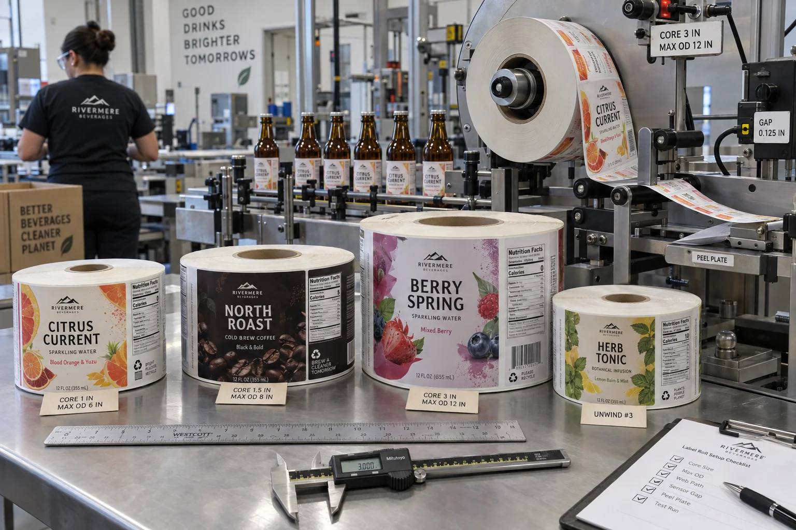

Short answer
Send the converter five roll facts: core inside diameter, maximum outside diameter, unwind direction, leading edge and target labels per roll. Add the machine model and roll-weight limit whenever possible. “Standard roll” is not a specification.
I have seen buyers spend a week comparing laminate and adhesive, then approve a purchase order with no core size. The labels arrive beautiful and the night shift cannot mount them. That is not a print defect. It is a missing interface between purchasing and production.
Core ID and roll OD solve different problems
| Specification | Controls | If wrong |
|---|---|---|
| Core inside diameter | Fit on the unwind mandrel | Roll cannot mount or slips |
| Maximum outside diameter | Clearance, weight and run length | Roll hits guards or overloads the unwind |
| Web width | Guide and sensor path | Tracking becomes unstable |
| Unwind direction | Which side and edge present first | Copy is upside down or adhesive faces the wrong way |
| Labels per roll | Changeover frequency and inventory count | Unexpected stops or excess roll weight |
A composite co-packer rejection
This is a composite planning example. A sauce brand moves filling to a co-packer. The label dimensions and bottle stay unchanged, so purchasing reorders the previous rolls. The old hand station used a small core; the new automatic applicator requires a larger mandrel and limits finished roll diameter.
The brand says, reasonably, “It is the same label.” The co-packer says, also reasonably, “It is the wrong roll.” Both are correct. The printed unit is the same; the production component is not.
We solve this by issuing a new roll specification linked to the co-packer and line number, even when the visible artwork remains unchanged.
Why labels per roll is an estimate
The number depends on label pitch, liner caliper, face material, adhesive, core size and maximum OD. Two rolls with the same outside diameter can carry different quantities. Splices and winding tension add variation. Ask for a target quantity with a practical tolerance, then let the maximum OD be the hard machine limit.
For production planning, divide the run by the verified labels-per-roll figure and add expected setup waste. For purchasing, count finished rolls and total labels separately so a small winding variation does not look like a shortage.
Large rolls are efficient until they are not
A larger OD can reduce changeovers, but it adds weight and inertia. Operators may struggle to lift it safely, and a compact tabletop applicator may not control it well. A smaller roll can be the better choice for short seasonal SKUs, manual loading or frequent artwork changes.
Factory-side view
“More labels per roll” is not automatically better value
Longer rolls reduce cores and changeovers. They also make a wrong artwork revision more expensive and can exceed what an operator should handle.
I would rather match the roll to the actual shift than win a theoretical efficiency argument from the quote desk.
Measure the line, not the sample roll alone
- Read the applicator manual and photograph the unwind station.
- Measure the mandrel and available guard clearance.
- Record maximum roll weight and whether the roll is power-unwound.
- Confirm label-out or label-in winding.
- Draw the leading edge and copy orientation on the approval.
- Include gaps, sensor marks and any clear-label sensing requirement.
- Test one production roll before releasing the full order.
What to put on the purchase order
- Core ID with units and allowed tolerance.
- Maximum finished roll OD, not a preferred average.
- Unwind diagram and leading-edge orientation.
- Target labels per roll and overrun/underrun tolerance.
- Machine model, web direction and application speed.
- Maximum roll weight and pallet orientation.
- SKU and artwork revision on every carton.
Avery's official core diameter guide explains the basic measurement. Your applicator manual remains the final authority. Also use our Label Roll Direction Guide to specify copy orientation clearly.
Frequently asked questions
What is label roll core size?
Core size normally means the inside diameter of the cardboard or plastic tube that mounts on the applicator mandrel. Common options exist, but the machine manual and measured mandrel control the order.
What is maximum roll outside diameter?
It is the largest finished roll diameter the unwind stand can safely hold without contacting guards or exceeding tension and weight limits.
Can a converter guarantee an exact number of labels per roll?
Usually a target quantity and tolerance are more realistic because liner thickness, label thickness, splices and winding tension affect the final diameter.
Does core size determine unwind direction?
No. Core diameter and unwind direction are separate specifications. Both must be confirmed, along with leading edge and copy orientation.
Related label guides
- Food Allergen Labeling: A Packaging Proof Guide
- Glassine vs PET Release Liners for Roll Labels
- Wet-Glue vs Pressure-Sensitive Bottle Labels
Review the complete label construction
Send package photos, material details, finished label size, quantity by artwork, storage conditions and application method. We can review fit, material and production details before preparing a quote and digital proof.
Prepare your dimensions and order quantity with the label size and quantity planner, then review the label buying specifications before requesting a quote.